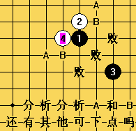

游星必胜4手
首页
五子棋交流
#1 游星必胜4手 作者：冷面孤煞 发表时间：2009-2-25 12:30:17
=======上图对应的爱五子棋谱代码如下，以便你拆解：========
h8h7j10g8
======================================================
#2 Re:游星必胜4手 作者：潇洒 发表时间：2009-2-25 21:12:39
请问是两打的时候白必胜 还是一打也白必胜？
#3 Re:Re:游星必胜4手 作者：江南新绿 发表时间：2009-2-25 21:15:23
=======上图对应的爱五子棋谱代码如下，以便你拆解：========
h8h9j6g8f7
======================================================这个5几乎唯一。白棋有可能必胜哦
#4 Re:游星必胜4手 作者：下棋思思 发表时间：2009-2-26 8:29:59
LZ的意思是对这个白4黑必胜吧？因为大家常说游、慧必败，黑必败白最易走的4是这样的吧
=======上图对应的爱五子棋谱代码如下，以便你拆解：========
h8h9j6g9
======================================================对于LZ给的这个白4，咱这水平的只知道黑白有得一战，胜负全看水平。
请高手或者对此有研究的朋友给出黑5一打二打点，理论上孰胜孰优，让咱学一步哈！
#5 Re:游星必胜4手 作者：下棋思思 发表时间：2009-2-26 8:42:30

不是说不让上传吗，这图片不也传上来了吗
#6 Re:Re:游星必胜4手 作者：江南新绿 发表时间：2009-2-26 14:42:07
=======上图对应的爱五子棋谱代码如下，以便你拆解：========
h8h9j6g8i9f7e6g7g9i7h7g5f4g10
======================================================这个5必败的。
#7 Re:Re:游星必胜4手 作者：闫荣辉 发表时间：2009-2-26 16:01:20
引用：
原文由 下棋思思 发表于 2009-2-26 8:42:30 :
不是说不让上传吗，这图片不也传上来了吗
威望大于5就可以！你也能啦！
#8 Re:游星必胜4手 作者：冷面孤煞 发表时间：2009-3-11 16:01:35
=======上图对应的爱五子棋谱代码如下，以便你拆解：========
h8h9j6g8f7i9
======================================================呵呵，3楼的兄弟，我们就这里拆一下吧
#9 Re:游星必胜4手 作者：冷面孤煞 发表时间：2009-3-11 16:02:21
2楼的大师，这个4手是2打白都必胜